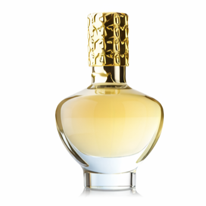
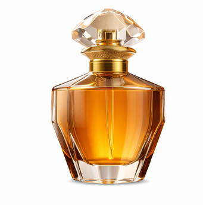
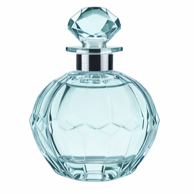

Fragancias femeninas

Iconic girl eau de parfum
Estos perfumes se caracterizan por su frescura y vitalidad, con notas predominantes de limón, naranja o pomelo. Son ideales para el día a día, aportando una sensación de frescura y energía.
- Naranja
- Neroli
- Pomelo rosado
- Amizcle blanco

Sky girl eau de parfum
Los perfumes dulces femeninos suelen incluir notas como vainilla, caramelo, praliné o frutas como la frambuesa. Son fragancias envolventes, sensuales y muy femeninas, perfectas para la noche o eventos especiales.
- Frutos rojos
- Canela
- Miel
- Sandalo

Heroe girl eau de parfum
Los perfumes florales para mujer destacan por notas como jazmín, rosa, peonía o lirio del valle. Son aromas románticos, elegantes y atemporales, ideales para cualquier ocasión.
- Peonia
- Jazmin
- Fresia
- Gardenia